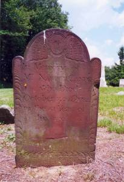

|
|

Naboth Candee
1734 - 1784
Atwater Curtiss Treat
1883 - 1955
Mary Henrietta Treat
1881 -
|
Welcome
Oxford Past is a joint effort
dedicated to providing a free database of Oxford history online.
Our
goal is to gather information, to create a resource
for the Oxford area, that is as accurate and informative as
possible.
Special thanks
to all those who have provided their efforts to
record our history.
We are
working
hard to
ensure that all work is given proper credit.
All additions
and corrections are appreciated.
|
Click on
photos
on this site to
view full screen.
|
|
 Roxy Sperry
Roxy Sperry
1802 -
1864
Wheeler-Osborn House
Built in 1772,
on Riggs Street,
by Samuel Wheeler
|
|